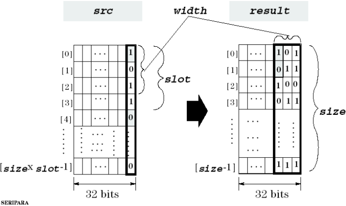

DSP_SERI_PARA
This API performs serial-to-parallel bit conversion.
DSP_SERI_PARA converts bit 0's of src elements into parallel data. Other bits of src elements are not used.
For the specified number (width) of src elements, bit 0 is stored into the rightmost bits of one result element. This is repeated size /slot times.
If slot >width, then after width elements of src are processed, DSP_SERI_PARA skips the next slot - width elements of src.

This API is defined in the header file /opt/hp93000/soc/prod_com/include/MAPI/libdsp.h.
Syntax
DSP_SERI_PARA(ARRAY_I& src, ARRAY_I& result,
INT width, INT slot);
DSP_SERI_PARA(INT *src, INT *result, INT size,
INT width, INT slot);I/O |
Parameter |
Description / Range |
|---|---|---|
I |
src |
Source array |
O |
result |
Result array (size of result) ≥ size/slot |
I |
size |
Number of elements to be processed 1 ≤ size ≤ 2097152 size ≤ (size of src) |
I |
width |
Number of slot bits that are valid slot ≥ width |
I |
slot |
Number of bits for one conversion 1 ≤ slot ≤ 32 |
Example
INT source[9], result[3];
.
.
DSP_SERI_PARA(source, result, 9, 2, 3);If source has the following elements:
source[0]=0
source[1]=1
source[2]=255
source[3]=2
source[4]=2
source[5]=255
source[6]=221
source[7]=221
source[8]=255
then, the elements of result become two bits data as follows:
result[0]=1
result[1]=0
result[2]=3
slot - width = 3 - 2 = 1, so after every two elements of source are processed, the next element is skipped. So, in this example, elements 2, 5, and 8 are skipped.